Chassis profile
The 2025 iPhone Air is a 6.5-inch USB-C model. Thin single-camera model where flex cable strain and pressure marks need extra care.
Model-Specific Tutorial
This iPhone Air screen guide is written as a standalone bench page. It explains the 2025 6.5-inch chassis, the parts most likely to be damaged, and the checks to make before the phone is sealed again.

Model Notes
The 2025 iPhone Air is a 6.5-inch USB-C model. Thin single-camera model where flex cable strain and pressure marks need extra care.
This page focuses on how to separate the display adhesive, protect display and sensor flex cables, move any required small parts, and test the panel before sealing. The 17 photo steps are kept in bench order so the screw table and the visible part position stay aligned.
Keep P2 pentalobe driver, Y000 driver, suction handle ready first, then add opening picks, heat source, spudger as the phone opens.
After the repair, inspect touch response, brightness, True Tone where available, Face ID or sensor behavior, earpiece sound, and clean frame seating. If anything fails, reopen before adhesive pressure makes the correction harder.
Quick Answer
Yes, a iPhone Air screen repair is possible when the exact model is matched first, the battery is safely discharged, and every bracket screw is kept in its original location. This guide covers 17 photo checkpoints from Prepare your phone for disassembly through Remove the screen.
The most important checks are display flex cables, top sensor hardware, waterproof adhesive, and mixed-length bracket screws. For US repair searches, this page connects the 2025 6.5-inch USB-C model, common symptoms, photo sequence, screw table, and closing tests in one crawlable guide.
Start Here
Use this iPhone Air guide for cracked glass, black display, green lines, ghost touch, or failed touch response. The photos are arranged as a practical bench sequence so you can stop after each action and compare the part position.
Thin single-camera model where flex cable strain and pressure marks need extra care. For this screen repair, watch display flex cables, top sensor hardware, waterproof adhesive, and mixed-length bracket screws.
Check touch response, brightness, True Tone where available, Face ID or sensor behavior, earpiece sound, and clean frame seating. This final check matters more on iPhone Air because thin single-camera model where flex cable strain and pressure marks need extra care.
US Repair Search Notes
This guide is written for US repair searches around iPhone Air screen replacement cost, cracked iPhone glass repair, black screen repair, green line display repair, and touch failure troubleshooting. It keeps the model name, repair type, symptom, and part checks together on one page.
Before ordering parts, match the exact iPhone Air generation, 6.5-inch display size, USB-C connector style, and the display assembly, touch response, OLED panel behavior, Face ID sensor area, and waterproof adhesive mentioned in this guide.
Pay extra attention to step 2 (Mark your opening picks), step 1 (Prepare your phone for disassembly), and step 17 (Remove the screen). These photos usually decide whether the repair stays clean or needs to be reopened.
A successful iPhone Air screen repair should pass the closing checks, sit flush around the frame, and show no new warnings, loose brackets, lifted adhesive, or cable pressure marks.
Step By Step
Follow these 17 photos in order. Each iPhone Air step includes a model note, the action from the photo, and a risk check for the screen repair.
iPhone Air note: iPhone Air display note: support the panel at a shallow angle so the 2025 flex routing is not pulled.
Let your phone's battery drain below 25% before starting this repair. A charged lithium-ion battery may catch fire if damaged. Unplug any cables from your phone. Hold the power and either volume button and slide to power off your phone.
Part rule: keep the removed part, bracket, and screws together until the matching reassembly step.

iPhone Air note: iPhone Air display note: support the panel at a shallow angle so the 2025 flex routing is not pulled.
If inserted too far, an opening pick can damage your device. Follow this step to mark your pick and prevent damage. Measure 3 mm from the tip and mark the opening pick with a permanent marker. You can also mark the other corners of the pick with different measurements. Alternatively, tape a coin to a pick 3 mm from the tip.
Part rule: keep the removed part, bracket, and screws together until the matching reassembly step.
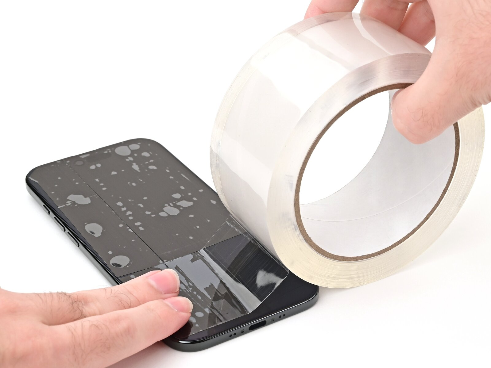
iPhone Air note: iPhone Air display note: support the panel at a shallow angle so the 2025 flex routing is not pulled.
Glass shards can complicate disassembly or worse, cause injury. If your phone has a cracked screen, follow this step. Apply strips of packing tape to the cracked glass until the whole screen is covered. This will help keep the glass contained and allow the suction cup to stick to the screen. Make sure there's a single strip (not overlapping) of tape across the bottom edge, big enough for a suction cup to fit on. Only cover the glass itself don't stick any tape to the frame....
Part rule: keep the removed part, bracket, and screws together until the matching reassembly step.

iPhone Air note: iPhone Air screw note: record this location before lifting the part. 6.5-inch models can reuse similar screw colors with different lengths.
Use a P2 pentalobe driver to remove the two 4.9 mm-long screws on either side of the USB-C port.
Screw rule: return each screw to the exact screen step location; a long screw in the wrong hole can damage the board.
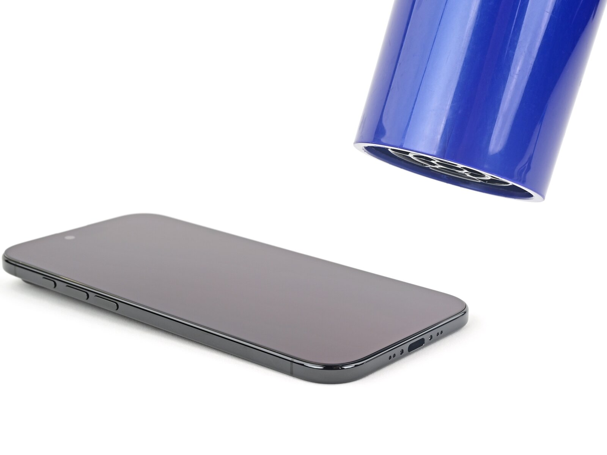
iPhone Air note: iPhone Air display note: support the panel at a shallow angle so the 2025 flex routing is not pulled.
Use a hair dryer or heat gun to heat the bottom edge of the screen until it's slightly too hot to touch. Improper use of a heat gun can destroy the display and/or battery. Follow the linked instructions carefully.
Adhesive rule: reheat and work shallow. On iPhone Air, forcing a cold edge can bend clips or mark the frame.
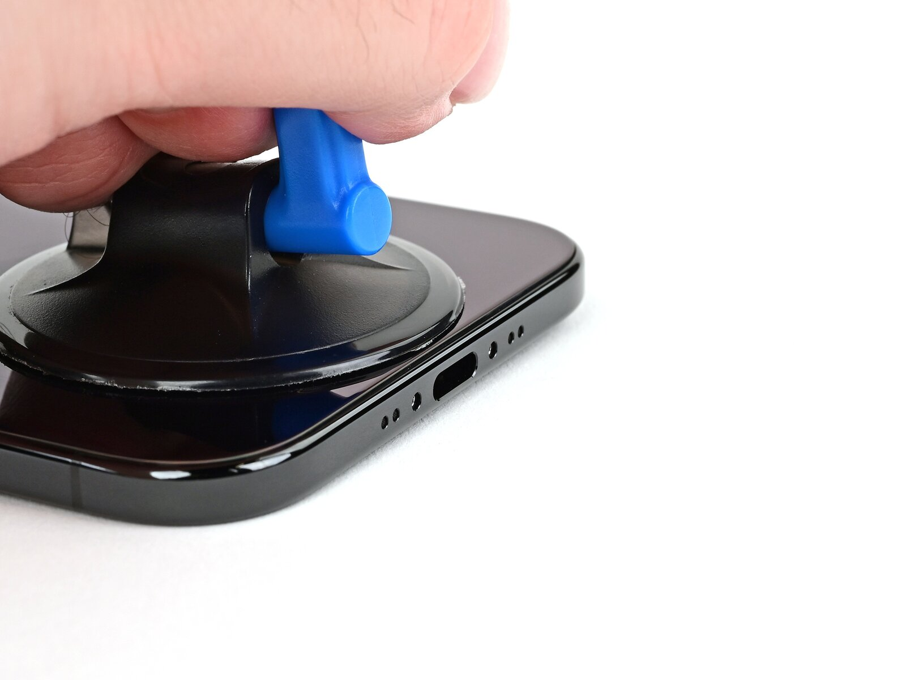
iPhone Air note: iPhone Air display note: support the panel at a shallow angle so the 2025 flex routing is not pulled.
Apply a suction handle to the bottom edge of the screen. Pull up on the suction handle with strong, steady force to create a gap between the screen and the frame. If you can't create a gap, apply more heat to the edge and try again. Insert the tip of an opening pick into the gap.
Part rule: keep the removed part, bracket, and screws together until the matching reassembly step.
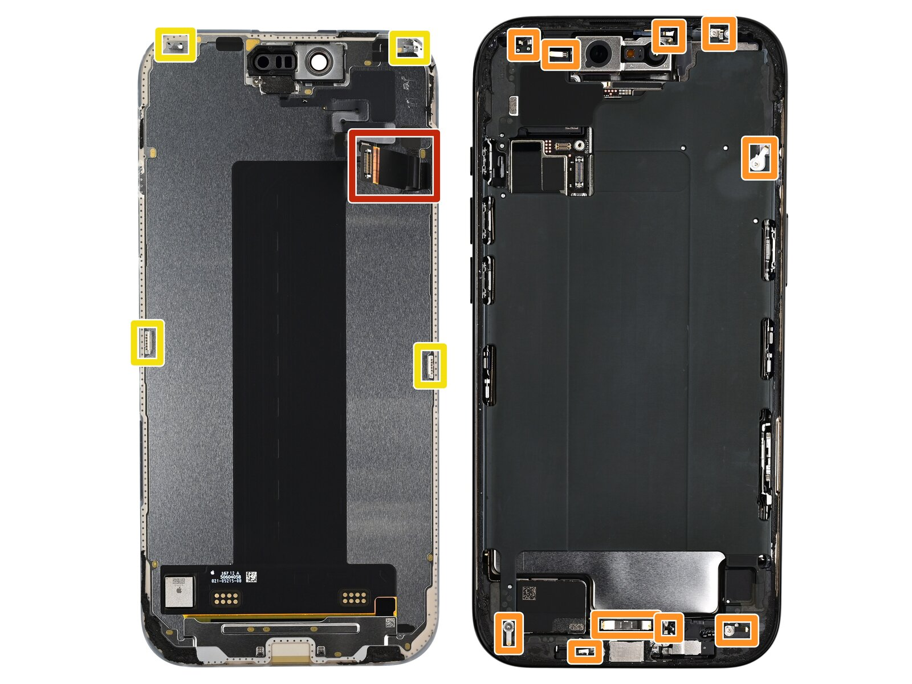
iPhone Air note: iPhone Air display note: support the panel at a shallow angle so the 2025 flex routing is not pulled.
As you slice the adhesive securing the screen in the following steps, don't insert your pick deeper than 3 mm to avoid damaging the following areas: Two delicate cables connecting the screen to the iPhone one just above the Action button and the other about halfway along the left edge of the iPhone Multiple spring contacts around the perimeter of the iPhone There are multiple clips around the iPhone. You'll hear and feel these release as you slide past them....
Part rule: keep the removed part, bracket, and screws together until the matching reassembly step.
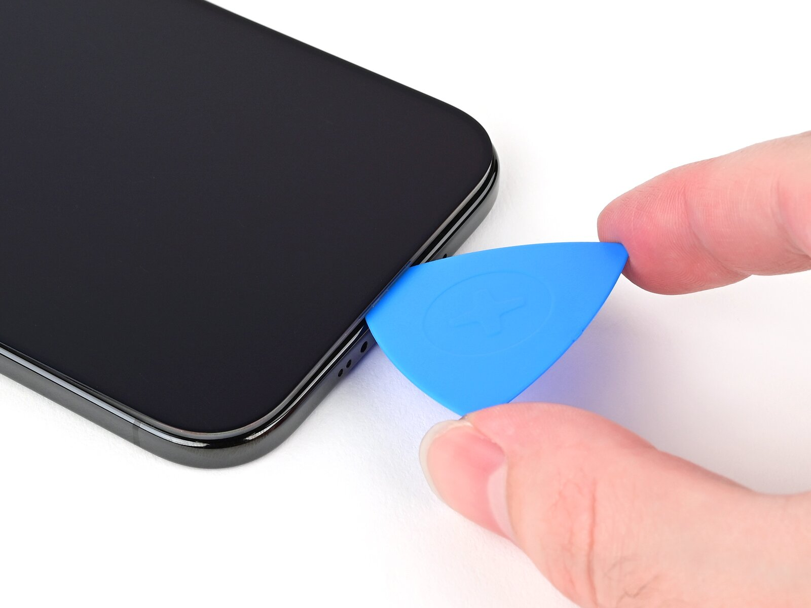
iPhone Air note: iPhone Air display note: support the panel at a shallow angle so the 2025 flex routing is not pulled.
Slide the opening pick along the bottom edge to release the adhesive. If the adhesive feels difficult to slice, reheat the edge for a minute. Leave the opening pick in the bottom left corner to prevent the adhesive from resealing.
Adhesive rule: reheat and work shallow. On iPhone Air, forcing a cold edge can bend clips or mark the frame.
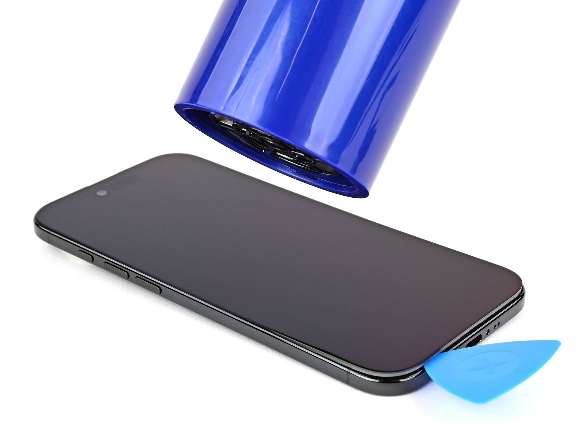
iPhone Air note: iPhone Air display note: support the panel at a shallow angle so the 2025 flex routing is not pulled.
Use a hair dryer or heat gun to heat the left edge of the screen until it's hot to the touch.
Adhesive rule: reheat and work shallow. On iPhone Air, forcing a cold edge can bend clips or mark the frame.
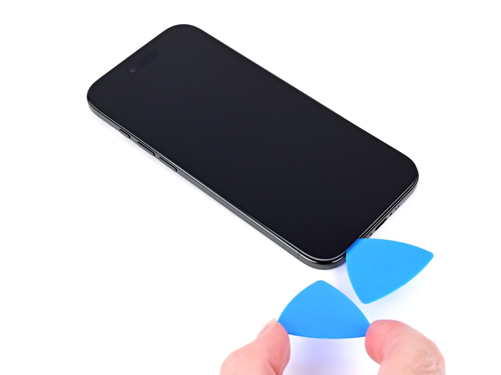
iPhone Air note: iPhone Air display note: support the panel at a shallow angle so the 2025 flex routing is not pulled.
Don't insert your pick deeper than 3 mm to avoid damaging the ribbon cables. Insert a second opening pick in the bottom left corner, close to the existing pick. Slide the opening pick along the left edge of the screen to separate the adhesive and release the metal clip. You'll hear and feel the metal clip release as you pass it. Leave the opening pick in the top left corner to prevent the adhesive from resealing.
Adhesive rule: reheat and work shallow. On iPhone Air, forcing a cold edge can bend clips or mark the frame.
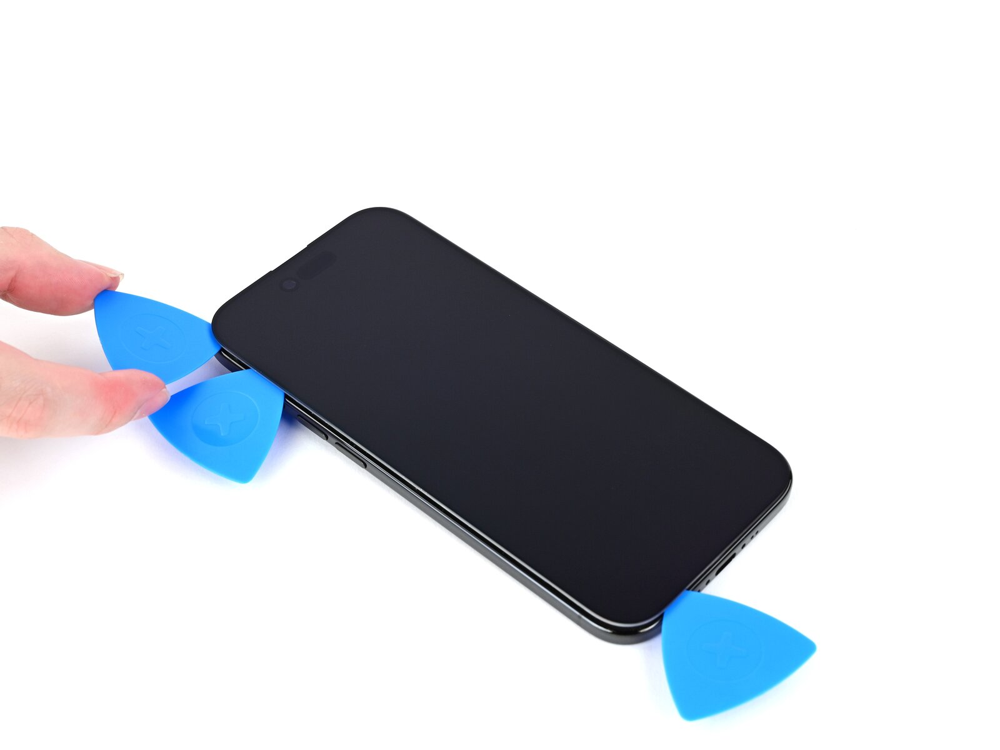
iPhone Air note: iPhone Air display note: support the panel at a shallow angle so the 2025 flex routing is not pulled.
Repeat the heating and sliding procedure along the remaining screen edges to separate the adhesive and release the clips.
Adhesive rule: reheat and work shallow. On iPhone Air, forcing a cold edge can bend clips or mark the frame.
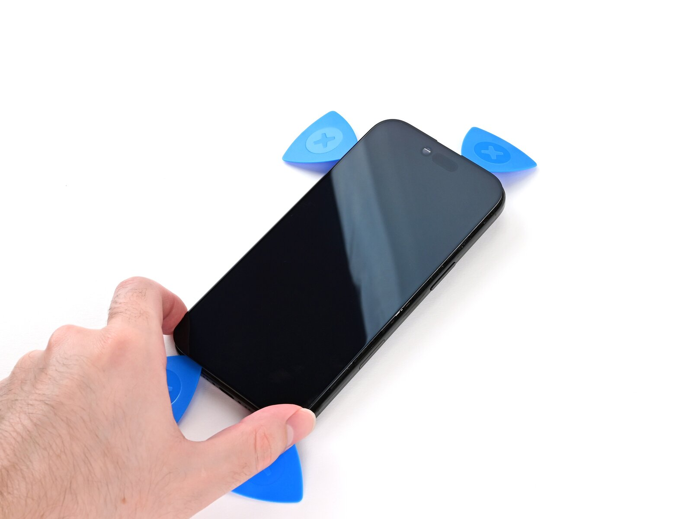
iPhone Air note: iPhone Air display note: support the panel at a shallow angle so the 2025 flex routing is not pulled.
At this point, the screen should be free from the frame. If the screen feels stuck, go back around the perimeter with your pick and separate missed sections of adhesive or stuck clips. Carefully lift the screen and swing it over the left edge of the iPhone. Prop the screen up with a small, sturdy object.
Part rule: keep the removed part, bracket, and screws together until the matching reassembly step.
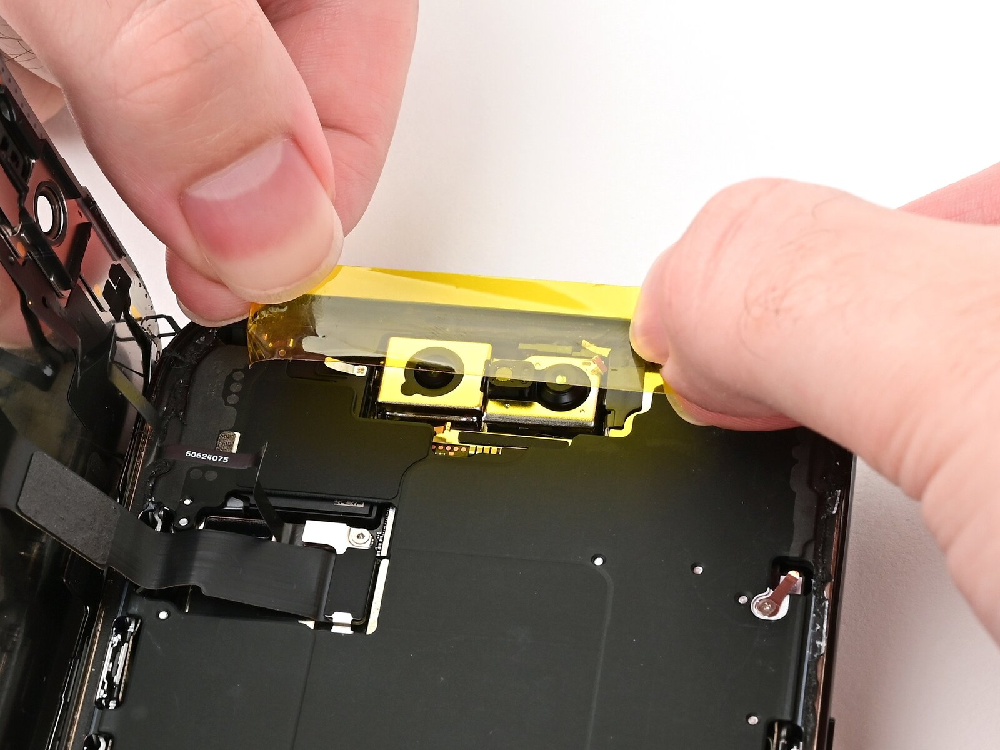
iPhone Air note: iPhone Air display note: support the panel at a shallow angle so the 2025 flex routing is not pulled.
We recommend using polyimide (aka kapton) tape to keep the front cameras clean. You may skip this step, but be extra careful not to touch the cameras. Install a strip of polyimide tape over the front camera assembly by pressing the tape down on either side of it. Don't press down on the assembly itself.
Part rule: keep the removed part, bracket, and screws together until the matching reassembly step.
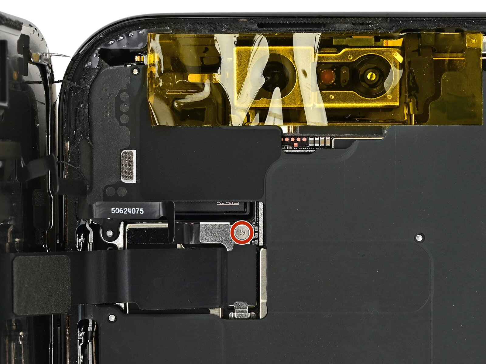
iPhone Air note: iPhone Air screw note: record this location before lifting the part. 6.5-inch models can reuse similar screw colors with different lengths.
Use a tri-point Y000 driver to remove the 1.1 mm-long screw securing the front sensor and display connector cover.
Connector rule: align over the socket first, then press from one side and the other. Do not press the middle if it feels misaligned.
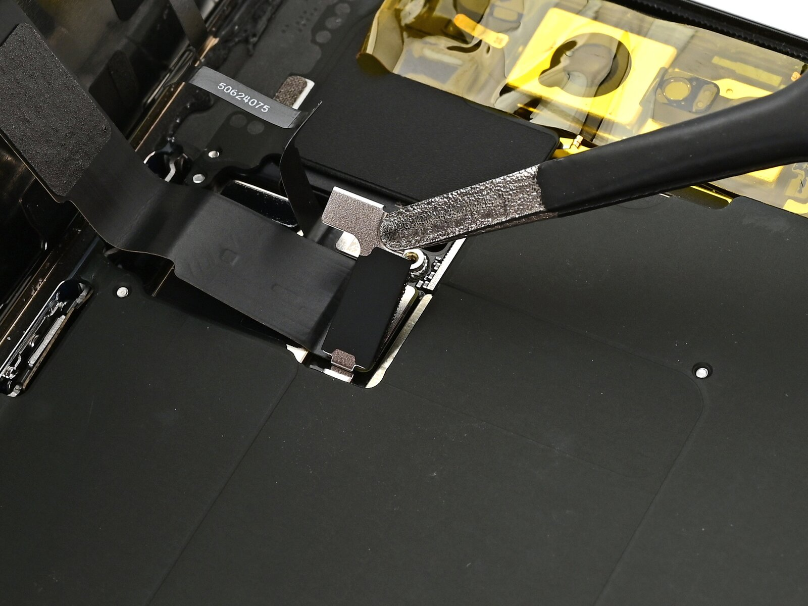
iPhone Air note: iPhone Air display note: support the panel at a shallow angle so the 2025 flex routing is not pulled.
Use tweezers or your fingers to lift the front sensor cover to a 45-degree angle and remove it. During reassembly, insert each cover at a 45-degree angle to re-engage the hook before laying it flat against the press connector.
Part rule: keep the removed part, bracket, and screws together until the matching reassembly step.
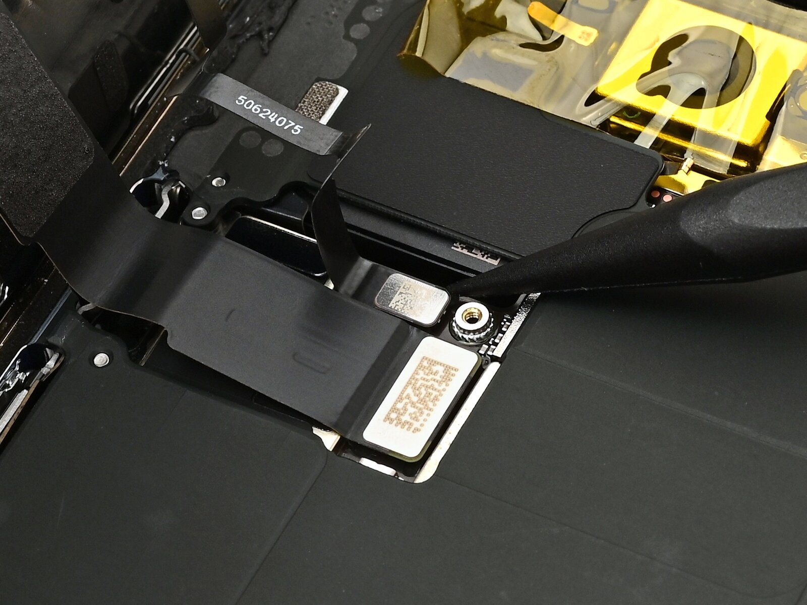
iPhone Air note: iPhone Air display note: support the panel at a shallow angle so the 2025 flex routing is not pulled.
Use the tip of a spudger to pry up and disconnect the front sensor and screen press connectors. During reassembly, align each connector carefully over its socket and press down with your fingertip or flat end of a spudger first on one side, then the other until it clicks into place. Don't try to force the connector into place. If you're having trouble, reposition it and try again.
Connector rule: align over the socket first, then press from one side and the other. Do not press the middle if it feels misaligned.
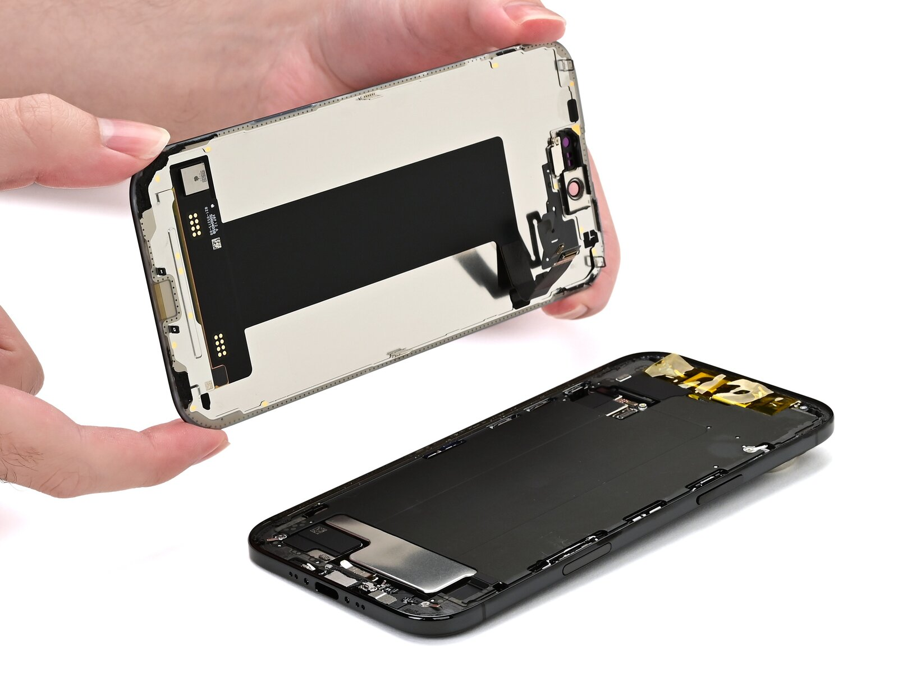
iPhone Air note: iPhone Air display note: support the panel at a shallow angle so the 2025 flex routing is not pulled.
Remove the screen. Follow this guide to reapply adhesive and install the new screen. Be careful not to damage any of the spring contacts as you clean the frame.
Part rule: keep the removed part, bracket, and screws together until the matching reassembly step.
Screw Map
Use this table as the iPhone Air screw map for the screen job. If a row mentions a bracket, keep that bracket and its screws together until reassembly.
| Repair step | Photo marker | Screw note and length |
|---|---|---|
| Remove the pentalobe screws | red | Use a P2 pentalobe driver to remove the two 4.9 mm-long screws on either side of the USB-C port. |
| Remove the connector cover | red | Use a tri-point Y000 driver to remove the 1.1 mm-long screw securing the front sensor and display connector cover. |
FAQ
No. Similar generations often share repair ideas, but iPhone Air has its own 6.5-inch housing, USB-C port layout, screw positions, and cable routing.
For this screen repair, test touch response, brightness, True Tone where available, Face ID or sensor behavior, earpiece sound, and clean frame seating. Do this before final adhesive pressure.
The table highlights steps where length or bracket position matters. Mixed screws are one of the easiest ways to turn a simple iPhone Air repair into board damage.
Stop if heat becomes excessive, a connector will not align, the battery bends, or glass fragments move toward cameras, cables, or the board.
References